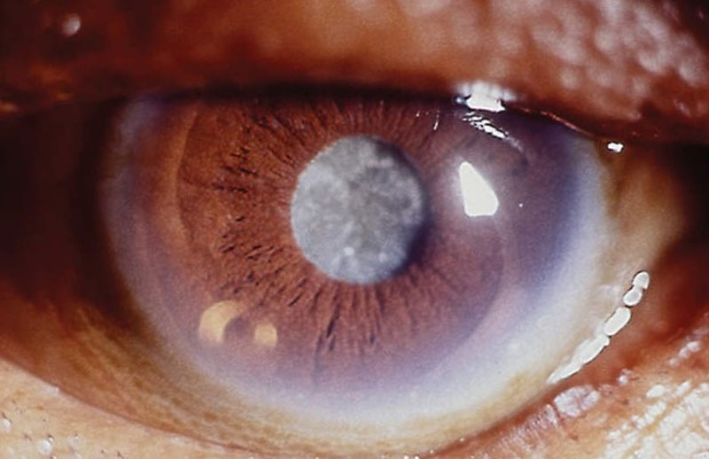

La labor en el producto
Pasaba 24 horas en los laboratorios. Mi objetivo era crear un producto que eliminara de manera integral los problemas de diabetes. Mi equipo científico investigó cada síntoma y su causa, así como la relación entre ellos. Estábamos buscando un nuevo enfoque para combatirlos y decidimos abandonar los componentes químicos clásicos que se usan en la mayoría de los medicamentos para la diabetes.
El aumento de la glucosa en la sangre afecta negativamente a todos los órganos. La sangre es el principal transportador de sustancias y oxígeno. Si no está bien, espera los problemas. En la diabetes de ambos tipos, los vasos grandes y pequeños se lesionan, las paredes se adelgazan. Al principio, la sangre deja de suministrar vasos pequeños, debido a esto, la sensibilidad disminuye en las extremidades y aparece un hormigueo desagradable.
Más adelante los ojos sufren. Los vasos sanguíneos en la pared posterior de los globos oculares no pueden con el aumento de la presión y los niveles de azúcar en la sangre. La visión comienza a disminuir, aparecen sensaciones desagradables, puntos turbios frente a los ojos.
Desafortunadamente, si es tarde para comenzar el tratamiento, la visión ya no se puede restaurar. En 4 de cada 10 casos, ocurre la ceguera total.

La naturaleza de la diabetes, tanto del primer como del segundo tipo, no está completamente establecida por los científicos. Se sugiere que dos factores juegan un papel importante: la predisposición genética o la infección viral. Este último afecta a las células pancreáticas responsables de la producción de insulina. El segundo tipo puede verse afectado por la obesidad, uno de cada 4 diabéticos es obeso.
Mis colegas y yo hemos centrado nuestros esfuerzos en dos problemas principales de diabetes: niveles elevados de glucosa y presión arterial. La dificultad radica en el hecho de que muchos medicamentos están contraindicados para su uso juntos. La mayoría de los medicamentos dirigidos a reducir la presión diluyen la sangre, pero el aumento de la glucosa causa un efecto secundario. La temperatura aumenta mucho, pueden comenzar escalofríos, dificultad para respirar e incluso ataques de pánico. En la diabetes, es necesario seleccionar la terapia con mucho cuidado. Solo el médico terapeuta puede prescribir la terapia, utilizando productos de química médica adecuados para usted.
Comenzamos a estudiar el problema a nivel genético, investigando diferentes grupos étnicos y nacionalidades. Los residentes del sur de Asia eran más propensos a la enfermedad, pero los evenki y los pueblos cercanos a ellos prácticamente no tienen diabetes.
Al estudiar su dieta y medicina tradicional, pudimos aislar conjuntos de componentes beneficiosos similares derivados de hierbas y bayas. La alholva se convirtió en un descubrimiento para nosotros, anteriormente prácticamente no se usaba en medicina y estudiaba poco sus propiedades.
La composición también incluía amapola, Aloe Vera, arándano, lino y picolinato de cromo. El picolinato es una forma orgánica de cromo que proporciona la máxima biodisponibilidad para la absorción del cuerpo. Es indispensable en los procesos de síntesis de grasas y metabolismo de carbohidratos. Ayuda a la absorción de vitaminas y elementos útiles del resto de los componentes y participa en el proceso de eliminación de toxinas y sales del cuerpo.
Durante cuatro años, perfeccionamos la fórmula perfecta y seleccionamos tecnologías de reciclaje para cada componente. Como resultado, logramos crear un producto a partir de materias primas naturales. Así apareció el .
Salida del producto a la luz
Luego, comenzaron las pruebas en grupos focales de diferentes edades y orígenes étnicos. Apareció una dinámica positiva después de una semana de admisión de los miembros de cada grupo. Después de un mes, más del 75% de los participantes notaron una mejora en su estado general, los indicadores de glucosa volvieron a la normalidad y disminuyó el número de picos de azúcar en la sangre.
Era hora de lanzar el medicamento a una amplia audiencia. Asistimos a solo unas pocas conferencias médicas, comenzamos a recibir docenas de ofertas para la cooperación. Pero, desafortunadamente, todas estas eran compañías farmacológicas privadas. Como saben, ya no se trata de salud, se trata de dinero. No quería que nuestro trabajo se desperdiciara. Para que el producto terminado esté inactivo en las farmacias por mucho dinero y la gente siga enferma.

Se tomó quizás la decisión más difícil de mi vida: abrir la producción propia. La dirección de nuestro Instituto apoyó la iniciativa de mi equipo científico. Hubo una serie de cenas benéficas para recaudar fondos para el lanzamiento de .
Omitiré los detalles de cómo se realizó el ensamblaje, la compra, el arreglo, etc. después de un año, teníamos todo el equipo y el personal necesarios. La producción funcionó.
Al principio, solo se suministraba a clínicas y hospitales. No había paquetes brillantes ni información para el comprador minorista. Pero comenzamos a recibir muchas solicitudes de suministros en paquetes pequeños para el autocuidado en el hogar. Por lo tanto, apareció un pequeño lote y la posibilidad de pedidos al por menor.
Las redes de farmacias nos inundaron con ofertas de cooperación. Pero, por temor a las falsificaciones y los precios inflados, fuimos por otro lado. Nos hemos hecho completamente independientes. Desde la recolección de materia prima hasta el embalaje de cartón, cada etapa es supervisada por nuestro personal.
No se identificaron efectos secundarios durante las pruebas del medicamento, lo que lo hace completamente seguro de tomar. Pero no se olvide de la intolerancia individual de los componentes en la composición. eficaz en todos los tipos de diabetes. Su potente composición limpia la sangre y ayuda a regenerar las paredes de los vasos sanguíneos, lleva el nivel de glucosa a la normalidad.
La forma de conveniente en que lo lanzamos hace que su uso sea simple y conveniente. El tratamiento completo está contenido en un solo paquete. El tiempo de uso no afecta su efectividad, se puede tomar antes, después y durante las comidas, lo principal es no interrumpir la dosis diaria.
Cómo ordenar
Como parte de la promoción de hoy, se puede comprar en nuestro sitio web oficial con un descuento del 50% o en las clínicas de los socios a precio completo al pasar por el curso del tratamiento. Si encuentras en algún otro lugar, no lo dudes, es falso.